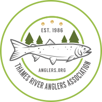
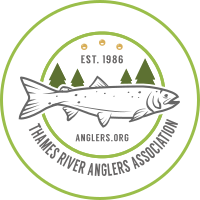

Thames River Anglers Association
 

Salmonid Monitoring
- Here's an overview of what happened over a few weekends in the Spring of 2012 when TRAA members and personnel from the Upper Thames River Conservation Authority (UTRCA) waded in for Year 3 of our 5-year Salmonid Tagging and Monitoring Program.
- Jon George, an MNR biologist from Thunder Bay who is helping us out with this project, compiled the comparative results of 2010 (Year 1) and 2011 (Year 2) and 2012 (Year 3) in an easy-to-understand report. Click Here to have a look; it's quite interesting.
- In addition to the following pictures, check out Rob Huber's video compilation
- Dan Schinkelshoek and Rob Huber follow closely ready for stunned rainbow trout to drift back to them.
- Dan assumes the "ready position" as a likely looking undercut is probed with the electro-shocker.
- Oddly enough, many fish this year were found in the faster flows such as this good riffle just upstream from a large culvert.
- Randy Bailey prepares to revive female male rainbow trout in the slower section of the creek before we could safely conduct the tagging, measuring and sampling procedures.
- Paul Noble measures the girth of a solid rainbow trout. The length, the sex and whether or not the fish has already spawned are also recorded in the monitoring log. This information, along with a scale sample are all referenced to the tag number that will be attached to the fish.
- The "sewing" of a small, plastic tag to the dorsal fin of the rainbow trout is actually the trickiest of all the procedures performed.
- The tag that you can clearly see attached to this male steelhead has a number sequence that will help the OMNR and the TRAA to understand the fish's activities.
- Scale samples are taken from every tagged fish for DNAanalysis to determine age and genetic classification. While our tags are green, there are lots of different tags on many species of fish out there. It's vital that you report these tag numbers and descriptions to the OMNR whether you keep or release the fish. Otherwise all this work is compromised.
- Not every fish netted is a trout and that's a good thing! This hognose sucker is native to faster flowing coldwatermstreams and rivers. They're an indicator of good to excellent water quality.
- And yes, there's lots of trout, both rainbows and browns. We love to see the various year classes that indicate a successful rate of reproduction. It also points to a healthy biomass in the stream to support both resident and lake-run trout.
↑